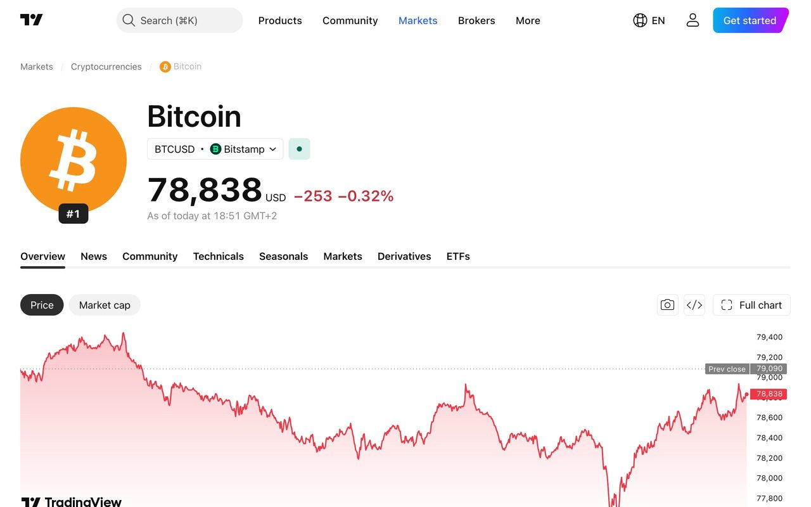
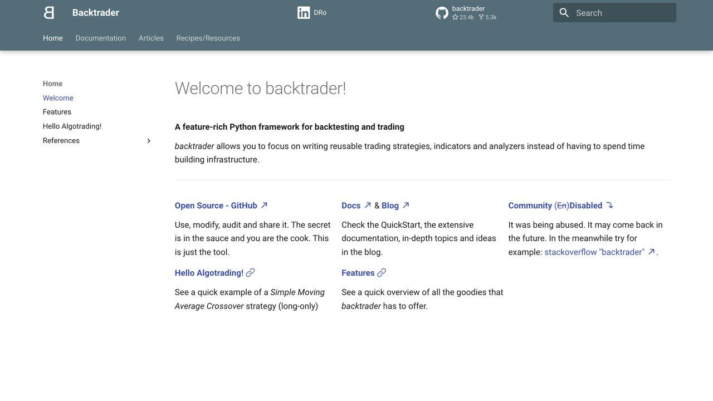

Conviene separar dos preguntas que se suelen mezclar: "¿puede una IA ayudarme a construir el código de un sistema de trading?" y "¿puede una IA predecir hacia dónde va a moverse el precio de un activo?". La respuesta a la primera es que sí, de forma razonable, con las precauciones que cubre esta guía. La respuesta a la segunda sigue siendo no, de forma consistente: ningún modelo de lenguaje tiene acceso a información privilegiada sobre el futuro, y tratarlo como un oráculo de predicción es exactamente el error que separa una herramienta de automatización útil de una apuesta cara disfrazada de tecnología.
Esta guía no contiene consejos financieros ni recetas de enriquecimiento. Los mercados son sistemas complejos con expectativa matemática difícil para el inversor minorista desinformado. Lo que cubrimos es ingeniería de automatización:
- check_circle Cero promesas de rentabilidad: ningún modelo de lenguaje predice rupturas de tendencia.
- check_circle Arquitectura real en Python asistido por IA: generación de scripts modulares sin tocar terminales a ciegas.
- check_circle Backtesting y paper trading obligatorios: por qué probar sin dinero real es el único paso entre tus ahorros y una mala sorpresa.

1. La anatomía de un sistema de trading automatizado
El error típico consiste en pedirle a un modelo: «Escribe un bot que compre barato y venda caro». El resultado casi siempre es un bloque de código monolítico sin manejo de errores ni separación de responsabilidades.
Un sistema razonable separa siempre la adquisición de datos, el cálculo estadístico y el envío de órdenes en tres capas independientes:
Esta separación no es un capricho de diseño limpio: es lo que permite depurar el sistema cuando algo falla. Si las tres responsabilidades están mezcladas en un único bloque de código, un error en la capa de datos (un dato de precio corrupto, una vela con fecha incorrecta) puede propagarse silenciosamente hasta la capa de ejecución y provocar una orden basada en información errónea, sin que quede claro en qué punto del proceso se originó el problema. Con las capas separadas, cada una puede probarse y auditarse de forma independiente, y un fallo se aísla al componente donde ocurrió en vez de contaminar el resto del sistema.
Conectores con librerías abiertas para descargar velas históricas cada cierto intervalo, sin intervención del modelo.
Indicadores matemáticos fríos y reglas binarias. El modelo no decide la ejecución en tiempo real; solo ayudó a escribir las reglas.
Cuenta de prueba (paper trading) con claves de solo lectura o de simulación. Cero acceso a retiros de fondos bajo ningún concepto.
2. Cómo pedirle a la IA el script de análisis y backtesting
Para quien no tiene formación técnica, la clave es usar modelos con buena capacidad de razonamiento como si fueran un programador senior que escribe código limpio, añade registros y aísla las variables sensibles.
«Actúa como un desarrollador senior en análisis cuantitativo. Necesito un script en Python modular que:
1. Descargue el historial de velas de un activo con una librería abierta de datos de mercado.
2. Calcule un cruce de medias móviles y filtre entradas según un indicador de sobrecompra/sobreventa.
3. Reste un porcentaje de comisión por cada cambio de posición, simulando el coste real del bróker.
4. Imprima una tabla con: tasa de acierto, máxima caída (drawdown) y retorno neto.
5. Separe la lógica en funciones documentadas con tipado claro.»
El código de este paso no se ejecuta con dinero real: se prueba en local. Un sistema que parece muy rentable en teoría suele caer con fuerza en cuanto se incluyen las comisiones de entrada y salida y el diferencial entre oferta y demanda — probarlo con y sin esos costes es el paso que más sorpresas evita.
«Si tu bot no sobrevive a un backtest con costes de comisión reales incluidos, no tienes un algoritmo: tienes un billete de lotería caro.
— Redacción El Telar
Cómo saber si tu backtest está sobreajustado (overfitting)
El sobreajuste es, según análisis del sector, la causa que más estrategias de trading rotas produce: el bot memoriza el ruido específico de los datos históricos en vez de aprender un patrón real que se repita. Tres señales de alarma:
- Cambiar la fecha de inicio o fin del backtest por solo unas semanas cambia el resultado de forma drástica
- Una regla usa un número muy concreto y arbitrario (por ejemplo, "esperar exactamente 17 velas") sin ninguna razón de mercado detrás, solo porque ese número dio buen resultado en el histórico
- La estrategia tiene más de 10-15 parámetros ajustados a mano sobre los mismos datos
Como referencia de cuánto se degrada una señal fuera de los datos con los que se descubrió: McLean y Pontiff analizaron 97 variables que la literatura académica había asociado a rentabilidades superiores y encontraron que sus rendimientos eran un 26 % menores fuera de la muestra original y un 58 % menores tras publicarse el estudio (Journal of Finance, 2016). Es un resultado sobre estrategias académicas en bolsa, no una tabla de descuentos para tu bot, pero deja clara la idea: lo que brilla en el histórico casi nunca se mantiene entero. Aplica además tus propias comisiones y deslizamiento, y si el backtest no sobrevive a una versión pesimista de esos costes, no lo despliegues.
Elegir dónde probarlo: por qué el entorno de paper trading importa tanto como el código
No todos los entornos de simulación son igual de honestos. Algunos bróker ofrecen cuentas de "papel" que ejecutan las órdenes de forma instantánea y sin deslizamiento, dando una imagen artificialmente perfecta del sistema que luego no se sostiene con dinero real. Al elegir dónde simular, prioriza un entorno que module al menos aproximadamente la latencia de ejecución y el deslizamiento de precio en momentos de volatilidad, aunque sea de forma simplificada — un simulador demasiado optimista es casi tan peligroso como no probar nada, porque genera una falsa sensación de seguridad.
Otro factor que se pasa por alto al elegir dónde simular: la calidad y el coste de los datos históricos que usarás para el backtest inicial. Un proveedor de datos gratuito con huecos o errores en el histórico puede hacer que una estrategia parezca funcionar cuando en realidad está aprendiendo de datos defectuosos. Antes de confiar en un resultado de backtest, revisa manualmente una muestra de los datos usados — unas pocas velas al azar comparadas con otra fuente — para descartar errores sistemáticos en el origen de los datos.
Un hábito recomendable es correr el sistema en paper trading durante un periodo razonablemente largo (varias semanas, no unos pocos días) antes de plantearte siquiera arriesgar una cantidad simbólica de dinero real. Los mercados atraviesan regímenes distintos (alta volatilidad, tendencia clara, lateral sin dirección), y un sistema que solo se ha probado durante un régimen concreto puede comportarse de forma muy distinta en cuanto el mercado cambia de carácter.

Lo que casi nadie menciona: fiscalidad y marco legal
Automatizar la ejecución no automatiza tus obligaciones fiscales. Cada operación cerrada con ganancia o pérdida sigue generando una obligación de declarar según la normativa de tu país de residencia, y un bot que abre y cierra decenas de posiciones al día puede generar cientos de eventos fiscales a final de año que hay que reconstruir uno a uno si no llevaste un registro adecuado desde el principio. Pide a tu sistema, desde el primer día, que registre cada operación con fecha, precio de entrada y salida, y resultado neto en un archivo exportable — reconstruir ese historial después, operación por operación, desde los logs crudos del bróker es mucho más costoso que registrarlo bien desde el principio.
Además, dependiendo del bróker o exchange que uses y de tu jurisdicción, operar de forma automatizada con determinados instrumentos (derivados, apalancamiento) puede estar sujeto a restricciones específicas para inversores minoristas. Esta guía no sustituye el asesoramiento de un profesional fiscal o legal cualificado en tu país — considéralo un paso obligatorio antes de operar con dinero real, no un extra opcional para cuando "el bot ya funcione bien".
3. La regla suprema: paper trading, stop-loss y un interruptor de emergencia
El código generado por IA puede asumir incorrectamente que una orden se ejecutó al recibir una respuesta correcta del servidor, cuando en realidad el bróker la rechazó por saldo insuficiente. Si el bot entra en un bucle de reintento ciego, puede multiplicar posiciones sin darte cuenta.
A. El stop-loss vive en el servidor del bróker, no en tu script
Si tu conexión se cae, una orden condicional guardada solo en tu ordenador nunca llegará a ejecutarse. Envía la orden de protección directamente al motor del bróker.
D. Confirma cada orden ejecutada contra el estado real de la cuenta
No asumas que una orden se ejecutó solo porque el bróker respondió sin error. Consulta el saldo y las posiciones abiertas después de cada operación para confirmar que el estado real coincide con lo que tu script cree que pasó, antes de calcular la siguiente decisión sobre datos que podrían estar desincronizados.
B. Límite de pérdida diaria
Si la cartera cae más de un porcentaje fijo en 24 horas, el sistema se detiene solo y avisa, sin reiniciarse automáticamente.
C. Un interruptor independiente
Un proceso separado que solo consulta el saldo y puede revocar las claves de API si detecta un desvío anómalo, aunque el bot principal se cuelgue.
4. Lo que suele fallar al probar esto en la práctica
Las APIs gratuitas de datos de mercado suelen bloquear temporalmente sin avisar. Diseñar reintentos con espera creciente evita desconexiones justo en momentos de volatilidad.
Sistemas con dos indicadores sencillos y reglas de riesgo estrictas suelen sostenerse mejor con costes reales que modelos más sofisticados de predicción de sentimiento.
Al generar código de análisis financiero, es habitual que un modelo invente el nombre de una función que no existe en la librería real, o confunda el orden de sus parámetros. Ejecutar el script en un entorno de pruebas y revisar el primer error de importación antes de asumir que "ya funciona" ahorra horas de depuración (más detalle en la guía de esta web sobre alucinaciones de la IA).
Que un indicador haya funcionado bien en el histórico no explica por qué debería seguir funcionando. Preferir reglas con una lógica de mercado comprensible (por ejemplo, una relación conocida entre volumen y volatilidad) sobre reglas puramente estadísticas sin explicación reduce el riesgo de que dejen de funcionar en cuanto cambien las condiciones del mercado.
Un script que asume que el mercado está siempre abierto en un horario fijo puede comportarse de forma inesperada en días festivos, cambios de horario estacional o sesiones con horario reducido. Verificar el calendario de mercado antes de operar es una comprobación barata que evita errores costosos en fechas atípicas.
La IA no convierte a nadie en un gestor de fondos de la noche a la mañana. Lo que sí hace es comprimir buena parte del trabajo de estructurar el código y las pruebas, dejando más tiempo para lo que de verdad importa: definir bien las reglas de riesgo antes de arriesgar nada.
Monitorización: qué revisar cada día, no solo al desplegar
Un sistema que funcionó bien el primer mes puede degradarse de forma silenciosa sin que ningún error visible lo señale. Pide a tu asistente de IA que te ayude a montar un panel simple (una hoja de cálculo actualizada automáticamente, o un mensaje diario a un canal de Slack o Telegram) con tres cifras mínimas: número de operaciones del día, resultado neto acumulado del mes y máxima caída actual respecto al pico anterior. Revisar esas tres cifras cada mañana durante cinco minutos detecta una degradación real mucho antes que revisar el código completo una vez al mes.
Un criterio simple para saber cuándo detener el sistema y revisarlo a fondo: si la caída actual supera la máxima caída observada durante todo el periodo de backtesting y paper trading, es una señal de que el comportamiento real se ha salido del rango que el sistema demostró poder tolerar, y conviene pausarlo hasta entender por qué, no seguir operando "a ver si se recupera solo".
Pausar el sistema no es un fracaso del proyecto, es exactamente el comportamiento que se supone que debe tener un sistema bien diseñado. La alternativa — dejarlo correr indefinidamente "a ver qué pasa" con la esperanza de que se corrija solo — es la actitud que convierte una herramienta de automatización disciplinada en el mismo tipo de apuesta especulativa que esta guía advierte evitar desde el principio.
Aurelio: tu patrimonio y un asesor IA en tu ordenador
Antes de pensar en bots que inviertan por ti, conviene saber qué tienes. Aurelio es una aplicación gratuita y de código abierto (MIT) de gestión de patrimonio y planificación financiera que funciona en tu propio ordenador, con un asesor de IA opcional.
Qué hace
- Reúne bancos, brókers y efectivo, con fotos fechadas de lo que tienes.
- Valora cada posición con precios de mercado, coste, ganancia y dividendos.
- Muestra qué contienen realmente tus fondos por país, sector, empresa y divisa.
- Incluye planes de inversión periódica, inmuebles y préstamos.
Cómo probarlo
- Instala Git, Node.js 22 o superior y uv.
- Clona el repositorio y ejecuta
./start.sh --demoen Mac o Linux, o./start.ps1 -Demoen Windows, para verlo con datos inventados. - Cuando te convenza, arráncalo sin la opción demo para usar tus datos, que se guardan en un archivo local.
Lo honesto: requiere algo de terminal. La parte de IA es opcional y funciona a través de OpenRouter con tu propia clave, que se paga por uso. Es una herramienta para ordenar tus números, no asesoramiento financiero profesional.
Repositorio: github.com/LosaLosSantos/aurelio-finance
TradingAgents: un equipo de agentes que debate una inversión
TradingAgents es un marco de código abierto (Apache-2.0) que imita el funcionamiento de una firma de trading con varios agentes de IA especializados. Es útil para entender cómo se combinan distintos análisis antes de una decisión, no para invertir dinero real.
Los papeles
- Analistas: fundamentales (cuentas de la empresa), sentimiento (titulares y redes), noticias y macroeconomía, y análisis técnico (indicadores como MACD o RSI). Trabajan a la vez.
- Investigadores: uno alcista y otro bajista debaten los informes.
- Trader: compone una propuesta con momento y tamaño de la operación.
- Riesgo y gestor de cartera: evalúan volatilidad y liquidez; el gestor aprueba o rechaza, y la orden se envía a un mercado simulado.
Para probarlo
- Clona el repositorio e instala las dependencias de Python según el README.
- Configura la clave de API de tu proveedor de IA (OpenAI, Anthropic, Google, DeepSeek…).
- Lanza la interfaz de línea de comandos con un ticker y una fecha.
Lo honesto: sus autores lo presentan como herramienta de investigación y advierten de que el rendimiento varía según el modelo, la temperatura y el periodo. Cada análisis consume llamadas de pago. Nada de esto es asesoramiento financiero.
Repositorio: github.com/TauricResearch/TradingAgents
Qué te dice (y qué no) un paper trading: el ejemplo de Alpaca
Un ejemplo concreto de los límites de una simulación. La documentación de Alpaca, un bróker con API pensada para programadores, explica que su paper trading es gratuito, que cada cuenta de papel tiene sus propias claves de API y que simula las órdenes con cotizaciones en tiempo real. También lista lo que no modela: no calcula el deslizamiento causado por la latencia, no comprueba que el tamaño de la orden quepa en la liquidez disponible, ni simula dividendos ni comisiones regulatorias; además, en torno al 10 % de las ejecuciones se simulan como parciales. Las cuentas de solo papel reciben datos de mercado del IEX únicamente. Fuente: documentación de paper trading de Alpaca. Moraleja: un buen resultado en papel es condición necesaria, no prueba suficiente.
No hemos comprobado si Alpaca ofrece cuentas reales a residentes en España; consulta siempre las condiciones del bróker y su autorización antes de abrir nada.
Leer la tabla de resultados sin engañarte
Cuando tu script imprima la tabla de resultados, esto es lo que significa cada cifra y cómo se suele malinterpretar:
| Cifra | Qué mide | Cómo engaña |
|---|---|---|
| Retorno neto | Ganancia o pérdida tras restar comisiones | Un buen número en un solo periodo puede ser suerte de régimen de mercado |
| Máxima caída (drawdown) | La mayor bajada desde un máximo hasta el mínimo siguiente | Si solo la miras en el histórico, subestimas la peor caída futura |
| Tasa de acierto | Porcentaje de operaciones ganadoras | Se puede acertar el 80 % de las veces y perder dinero si las pérdidas son mucho mayores que las ganancias |
| Número de operaciones | Cuántas muestras respaldan el resultado | Con 15 operaciones casi cualquier resultado es compatible con el azar |
| Resultado fuera de muestra | Lo que hace la estrategia con datos que no usaste para diseñarla | Si lo "reservas" y luego retocas la estrategia mirándolo, deja de ser fuera de muestra |
Una práctica sencilla: reserva el último tramo de tus datos (por ejemplo, el último año) y no lo mires hasta que la estrategia esté cerrada. Se calcula una sola vez. Si el resultado cae mucho respecto al tramo de diseño, tienes sobreajuste.
Ofertas de "bots milagro" y agentes con acceso a tu cuenta
Si te ofrecen un "bot de IA" ya hecho, antes de nada comprueba quién lo vende. La CNMV, en su decálogo de recomendaciones al inversor, aconseja verificar que la entidad esté autorizada y no figure en sus advertencias, y desconfiar de la urgencia y de las rentabilidades desproporcionadas (decálogo de la CNMV (PDF)). Señales que, en la práctica, deberían bastarte para descartar la oferta:
- Rentabilidad garantizada o "sin riesgo". Ninguna estrategia legítima la puede prometer.
- Te piden que ingreses dinero en una plataforma propia o que des acceso a tu cuenta, en lugar de que el código corra en tu equipo con claves limitadas.
- Capturas de beneficios sin cuenta verificable, o "testimonios" con rostros generados por IA.
- Presión para decidir hoy, o comisiones por "desbloquear" ganancias.
Tienes más patrones de fraude en la guía de estafas con IA.
Si construyes tú el sistema, otro riesgo propio de 2026: no conectes un agente que lee noticias, redes o correos con permiso para enviar órdenes. Un texto externo puede contener instrucciones disfrazadas de dato (véase prompt injection). Mantén la separación de esta guía: la IA ayuda a escribir y revisar reglas; la ejecución la hace código determinista con límites fijos. Para el análisis de noticias sin capacidad de operar, mira el agente que vigila cripto y resume noticias.